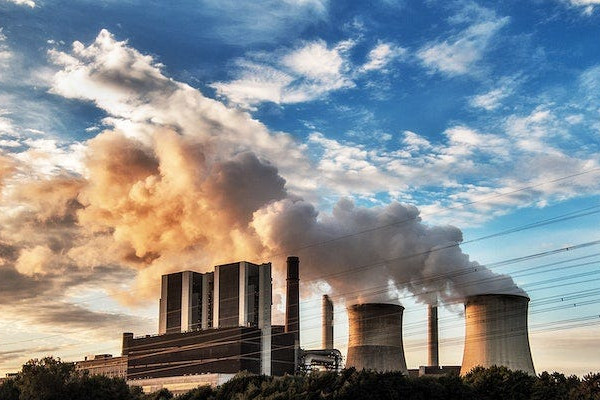
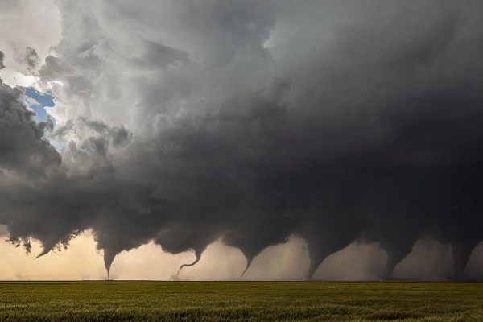
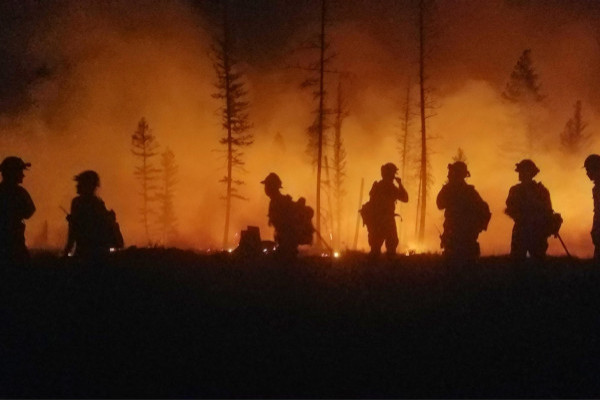

Burning fossil fuels to produce electricity contributes 32.6% of greenhouse emissions, trapping the suns heat
Fossil fuels coal, oil and gas are the largest contributor to global climate change accounting for over 75% of greenhouse emissions
Warmer temperatures over time are changing weather patterns and disrupting the usual balance of nature

This gives the potential for more energy for storms and certain extreme weather events
A hot summer bushfire will release massive amounts of carbon dioxide into the environment

With bush fires becoming more frequent due to hotter and drier conditions, forest ecosystems are affected and becoming less efficient at carbon uptake
Warmer air causes the ice to melt more quickly and flow more rapidly to the sea
Fewer bright surfaces are available to reflect sunlight back into the atmosphere. More solar energy is absorbed at the surface and ocean temperatures rise
When trees are cut down more carbon dioxide is released and less is absorbed
If forests are cleared, they release carbon dioxide and other greenhouse gases. Forest loss and damage is the cause of around 10% of global warming

When forested lands are cleared, the direct loss of tree cover disrupts this balance, reducing the amount of oxygen produced
Humans and virtually all animal life on Earth require oxygen to breathe. Oxygen levels are declining due to the burning of fossil fuels and other kinds of pollution
References:
https://theowp.org/reports/climate-change-in-the-21st-century-mitigating-greenhouse-gasses/
https://www.marxist.africa/revolutionary-change-not-climate-change.htm
https://euroweeklynews.com/2024/03/30/climate-change-may-affect-timekeeping/
https://medium.com/@benshreadhewitt/pandoras-box-anthropogenic-aerosols-and-climate-change-297ff1216016
https://www.pexels.com/photo/deforestation-in-wood-on-sunset-6175399/
https://www.rawpixel.com/search/deforestation?page=1&path=_topics&sort=curated
https://cherwell.org/2023/11/22/why-we-might-not-beat-climate-change/
https://www.rawpixel.com/search/climate%20change?page=1&path=_topics&sort=curated
https://hbswk.hbs.edu/item/even-for-non-believers-these-are-the-next-steps-on-climate-change
https://commons.wikimedia.org/wiki/File:Evolution_of_a_Tornado.jpg
https://www.deviantart.com/coolarts223/art/Cosmonaut-sees-the-dream-of-grass-and-Earth-961806948
https://www.deviantart.com/coolarts223/art/Person-in-spacesuit-stands-in-crowded-street-1063565800
https://theowp.org/reports/climate-change-in-the-21st-century-mitigating-greenhouse-gasses/
https://www.marxist.africa/revolutionary-change-not-climate-change.htm
https://euroweeklynews.com/2024/03/30/climate-change-may-affect-timekeeping/
https://medium.com/@benshreadhewitt/pandoras-box-anthropogenic-aerosols-and-climate-change-297ff1216016
https://www.pexels.com/photo/deforestation-in-wood-on-sunset-6175399/
https://www.rawpixel.com/search/deforestation?page=1&path=_topics&sort=curated
https://cherwell.org/2023/11/22/why-we-might-not-beat-climate-change/
https://www.rawpixel.com/search/climate%20change?page=1&path=_topics&sort=curated
https://hbswk.hbs.edu/item/even-for-non-believers-these-are-the-next-steps-on-climate-change
https://commons.wikimedia.org/wiki/File:Evolution_of_a_Tornado.jpg
https://www.deviantart.com/coolarts223/art/Cosmonaut-sees-the-dream-of-grass-and-Earth-961806948
https://www.deviantart.com/coolarts223/art/Person-in-spacesuit-stands-in-crowded-street-1063565800